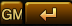

from sikuli.Sikuli import *
import sys
# add sys path
sys.path.append("/Users/JamesSong/subcharEachStart.sikuli")
import utils
reload(utils)
from utils import *
import dailyAct
reload(dailyAct)
from dailyAct import *
#import actions
#import Screens
from actions import *
from Screens import *
# this is for daily sotang
Debug.user("Sub char each join evt & go %s" % ("V1.0"))
def ExitScript(event):
exit()
# When the user pressed Ctrl+Alt+F1, click the top-left apple icon.
Env.addHotkey(Key.ESC, KeyModifier.CTRL ,ExitScript)
def eachSubCharStart():
# find empty event icon
# click found
# comeback ori tab
# join, get Daliy
# turn ssd tab
# click go
# turn ssd go tab
#r_IDicons = Region(Region(10,315,350,364))
# +2 more char
r_IDicons = Region(10,235,350,444)
# r_IDicons.find("../IdIconEmpty.png").click()
r_IDicons.find().click()
wait(0.5)
type(Key.TAB , KeyModifier.CTRL + KeyModifier.SHIFT )
# Region(92,-893,377,55).find ("JoinEvent.png").click()
Region(Region(382,168,687,60)).find ().click()
wait(0.5)
Region(Region(382,168,687,60)).find ().click()
wait(0.5)
type(Key.TAB , KeyModifier.CTRL )
def checkLoginPeriod():
# check event join result
if not Region(Region(425,284,441,111)).exists(,0.5):
return
click(Location(117, 215))
type(Key.SPACE)
Region(Region(236,129,757,238)).find().click()
def CheckEventResult():
# check event join result
#openApp("your-browser") # should open a new Browser window
wait(0.5) # make sure window is ready
type("l", KeyModifier.CMD)
#wait(1)
paste("http://ssd.ilovegame.co.kr/event/read/1872")
type(Key.ENTER)
wait(0.5)
#openApp("Google Chrome", "http://ssd.ilovegame.co.kr/event/read/1793")
type(Key.SPACE);
wait(1)
type(Key.SPACE, KeyModifier.SHIFT)
# check daily join result
# Region(838,-954,95,46).find("1446477118087.png").click()
# wait(0.7)
# Region(-54,-600,847,612).find("DialogDailyClose.png").click()
# wait(0.3)
def GoFlashSSD():
Region(Region(125,337,279,364)).find().click()
wait(1)
Debug.user("End of each sub char start")
def DoCharDailyActions():
attend = AttendAction()
attend.Do()
reward = RewardAction()
reward.Do()
honor = HonorAction()
honor.Do()
harvist = HarvistAction()
harvist.Do()
jumsul = JumsulAction()
jumsul.Do()
jusulMerge = JusulMergeAction()
jusulMerge.Do()
fishing = FishingAction()
fishing.Do()
suyeh = SuyehAction()
suyeh.Do()
runScript("/Users/JamesSong/dailySoTang")
def eveningActions():
harvist = HarvistAction()
harvist.Do()
def selectCharJoinEvent():
# when no more : throw exception.. currently
eachSubCharStart()
# CheckEventResult()
checkLoginPeriod()
GoFlashSSD()
wait(4)
MakeFullScreen()
Region(Region(149,722,260,79)).wait(, 20)
wait(3) # to wait until reorganize menu icon
Debug.user("Reload done !!" )
def WaitReload():
click(Location(74, 77))
wait(5)
wait(12) # to wait until reorganize menu icon
Debug.user("Reload done !!" )
def InfiniteTry():
for i in range(0,50):
print (" Infinite try " ,i )
infinite = InfinteAction()
infinite.Do()
WaitReload()
#Region(Region(149,722,260,79)).exists("1466955899374.png",0.5):
def PickPeaches():
for i in range(0,7):
print (" try Pick peach " ,i )
peach = PeachAction()
peach.Do()
# wait reload
click(Location(74, 77))
wait(3)
#WaitReload()
MakeFullScreen()
Region(Region(149,722,260,79)).wait(, 20)
wait(3) # to wait until reorganize menu icon
test =  l_peach_inPopupWin = Location(678, 408)
if __name__ == "__main__":
Settings.UserLogs = True
Settings.UserLogPrefix = "user"
Settings.ActionLogs = True
openApp("Google Chrome")
# jusul only
'''
l_jusulstart = Location(800,900)
for j in range(0,200):
for k in range(0,20):
click(Location(750 + 0*100, 650));
wait(1)
click(Location(750 + 1*150, 650));
click(Location(750 + 2*150, 650));
exit()
'''
# just 100 year retry
# InfiniteTry()
# exit()
# just do cur char actions. when open flash screen
r_ChatDiag = Region(149,722,260,79)
if Screens.checkExists(r_ChatDiag, ,0.5):
DoCharDailyActions()
#eveningActions()
exit()
for i in range(0,11):
selectCharJoinEvent()
#DoCharDailyActions()
#wait(15)
eveningActions()
wait(1)
# close window
type('w' , KeyModifier.CMD )
wait(0.5)
type('w' , KeyModifier.CMD )
l_peach_inPopupWin = Location(678, 408)
if __name__ == "__main__":
Settings.UserLogs = True
Settings.UserLogPrefix = "user"
Settings.ActionLogs = True
openApp("Google Chrome")
# jusul only
'''
l_jusulstart = Location(800,900)
for j in range(0,200):
for k in range(0,20):
click(Location(750 + 0*100, 650));
wait(1)
click(Location(750 + 1*150, 650));
click(Location(750 + 2*150, 650));
exit()
'''
# just 100 year retry
# InfiniteTry()
# exit()
# just do cur char actions. when open flash screen
r_ChatDiag = Region(149,722,260,79)
if Screens.checkExists(r_ChatDiag, ,0.5):
DoCharDailyActions()
#eveningActions()
exit()
for i in range(0,11):
selectCharJoinEvent()
#DoCharDailyActions()
#wait(15)
eveningActions()
wait(1)
# close window
type('w' , KeyModifier.CMD )
wait(0.5)
type('w' , KeyModifier.CMD )